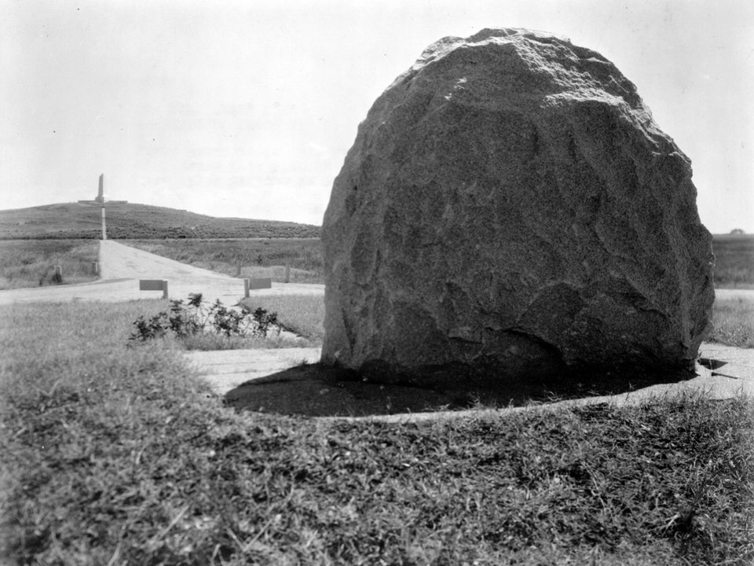

Manteo · Romantic inn
The White Doe Inn
A Victorian bed and breakfast in the middle of Manteo, walkable to the waterfront and restaurants. The classic romantic choice.
Official details for The White Doe InnFly to where flight began.
On December 17, 1903, the Wright brothers flew here for the first time. Today the Outer Banks pairs that pilgrimage with wide, quiet beaches, the East Coast’s tallest dunes and Manteo’s small-town waterfront.

Time illustration: direct distance at 150 KTAS plus 15 minutes for departure and arrival, matching the discovery page. Use ForeFlight for your actual flight plan.
Check the weekend weather at both ends → Flight category, your minimums and the crosswind on the best runway.
KMQI, Dare County Regional Airport, sits beside Manteo on Roanoke Island, with full services and room to park for the weekend.
410 Airport Road, Manteo, NC 27954
The county-run FBO lists self-serve and full-serve 100LL, a courtesy car, crew cars and rental cars, plus a pilot lounge and showers. Ask about two-night parking, fees and after-hours access. CTAF/UNICOM 122.8. No live fuel price is shown.
Military restricted areas lie over the mainland west of Roanoke Island. Review the sectional and current NOTAMs, and expect strong coastal winds.
Bucket-list hop: First Flight Airport (KFFA) is a 3,000-foot strip inside the Wright Brothers National Memorial, about 15 minutes away by air. No fuel, VFR only, deer on the runway and a ditch off Runway 21. Older listings show a 24-hour parking limit; confirm current rules with the National Park Service and the Chart Supplement. Keep the airplane based at KMQI and make it a short visit.
Stay in Manteo for an easy small-town base close to the airport, or in Duck for a resort on the sound.
A Victorian bed and breakfast in the middle of Manteo, walkable to the waterfront and restaurants. The classic romantic choice.
Official details for The White Doe InnA waterfront inn on Shallowbag Bay with its own restaurant, 1587. Minutes from the airport.
Official details for Tranquil House InnA soundfront resort in Duck with a spa, beach access and sunset views. Choose it for a more indulgent weekend; about 35 minutes from the airport.
Official details for The Sanderling ResortThe Outer Banks’ real luxury is a private oceanfront house in Duck, Corolla or Nags Head, often with a pool and hot tub. Book through a local rental agency; many require week-long stays in summer, with shorter stays off-season.
The Sanderling is already the area’s top resort. For a step up, ask about its soundfront suites and spa packages.
Official details for Sanderling soundfront suitesPrices and availability for your dates, through our partner Stay22. This is an affiliate link: we may earn a commission at no cost to you. The picks above are never paid.
Seafood is the point. Reserve weekend dinners, especially in summer.
Fresh seafood, cocktails and an intimate room at the Tranquil House Inn, overlooking the water. An easy first night close to the airport.
Official details for 1587 Restaurant & LoungeOne of the Outer Banks’ best-known upscale restaurants, on the sound in Duck. Time it for sunset.
Official details for Blue PointA newer waterfront restaurant in Manteo. For an Outer Banks classic instead, try Owens’ Restaurant in Nags Head.
Official details for Salt & Cypress KitchenStart with the memorial, then let the beaches and dunes set the pace.
Walk the first-flight path, with markers for each of the four 1903 flights, see the reconstructed camp buildings and climb Big Kill Devil Hill to the granite monument. The visitor center has a full-size reproduction of the 1903 Flyer.
Park informationThe tallest living sand dune system on the East Coast, in Nags Head. Climb it at sunset; take shoes, as the sand gets hot.
A boardwalk, shops and the reconstructed Roanoke Marshes Lighthouse on Shallowbag Bay. Lovely in the evening.
On Roanoke Island near the airport: the long-running outdoor drama about the 1587 colony (summer) and formal gardens beside it.
A striped lighthouse in Cape Hatteras National Seashore, about 25 minutes south. Check whether climbs are open.
The Sanderling Resort in Duck has a full-service spa. A couples treatment pairs well with dinner at Blue Point nearby.
Booking: Ask about couples treatments, access for non-resort guests, current pricing and cancellation policy. No prices are shown here, and no appointment has been booked.
Spa detailsThis prototype links to the destination calendar. It does not yet match events to your travel dates.
Each year the memorial marks the Wright brothers’ first flight, often with aviation guests and a flyover. A special date for pilots; check the park’s plans.
America’s long-running outdoor symphonic drama on Roanoke Island. Summer evenings only.
Mild weather, quieter beaches and lower rates. Summer is busy and hot; hurricane season runs June–November.
Check the destination calendar when choosing a weekend, and confirm dates and tickets with the organizer.
A sample Friday–Sunday weekend: the first-flight pilgrimage, sunset on the dunes and two seafood dinners. No bookings or availability confirmed.
Land at KMQI mid-morning and take the courtesy car or a rental.
Wright Brothers National Memorial, then lunch on the Manteo waterfront.
A short climb at Jockey’s Ridge, then fly home before the afternoon winds build.
Land at KMQI, subject to weather and your actual flight plan, and pick up the car.
Lunch on the Manteo waterfront and a walk to the Roanoke Marshes Lighthouse. Check in.
Dinner at 1587.
Wright Brothers National Memorial: the visitor center, the flight markers and the climb to the monument.
Beach time, or a spa treatment at The Sanderling.
Sunset from the top of Jockey’s Ridge, then dinner at Blue Point.
The Elizabethan Gardens or Bodie Island Lighthouse.
Return the car and allow time at the FBO; coastal winds can pick up through the day.
Let weather and your flight plan set the departure.
Drive south through Cape Hatteras National Seashore toward the Cape Hatteras Lighthouse.
Beach time, or the North Carolina Aquarium on Roanoke Island.
In summer, The Lost Colony outdoor drama; otherwise a quiet dinner in Duck.
This guide is part of a multi-stop flying trip. Set your dates and aircraft, then swap stops to make it your own.
These details make the difference between an appealing list and a usable getaway.
Car and lodging first, then dinners and any spa time.
Strong winds and fast-moving storms are common. Build in a backup day.
June through November. Watch the tropics and keep plans flexible.
Rates, show tickets and restaurant hours are date-dependent. No availability or live price is implied here.
Picks and links reviewed by WingAway Weekends. Hours, prices, menus and availability change often, so confirm directly with each place before booking. Spotted something out of date, or have a favorite we missed? Email us at hello@wingawayweekends.com.
WingAway Weekends helps you discover the destination. Use ForeFlight and current official aviation information for route, performance, weather, NOTAMs and preflight decisions. Flight planning and PIC responsibility stay with the pilot.